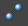
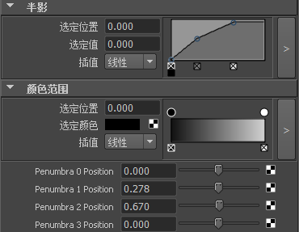

可以用与发布任何其他属性相同的方式，从“资产编辑器”(Asset Editor)中发布渐变属性（例如，体积光的半影属性）。有关使用“资产编辑器”(Asset Editor)发布属性的详细信息，请参见发布或取消发布属性。
也可以将单独的渐变点发布至资产。但是执行此操作时，不能发布这些点的父属性或暂时取消其绑定。
发布渐变点
- 打开“资产编辑器”(Asset Editor)。
- 选择包含具有渐变属性的对象的资产，并单击“固定资产”图标 。
- 选择渐变属性。
- 如果渐变属性已发布，需要先取消绑定该渐变属性，方法是单击右侧面板中相应已发布名称所对应的取消绑定图标 ()。
- 展开渐变属性下方的属性列表。
- 选择要发布的点并单击“发布选定属性”(Publish Selected Attributes)按钮 ()。
- 再次选择渐变属性（上一步骤中发布的点的父属性）。
- 如果该渐变属性最初未发布，请使用“发布选定属性”(Publish Selected Attributes)按钮 () 来发布它。否则，单击右侧面板中相应已发布名称所对应的绑定图标 ()（现在位于“未绑定”(Unbound)部分中），以将渐变属性重新绑定到其原先发布的名称。
打开资产的“属性编辑器”(Attribute Editor)，该渐变将显示在“已发布的属性”(Published Attributes)部分中。每个已发布的点都会显示在该节点的已发布的属性的底部。编辑这些已发布点的值，以更新渐变上相应的点。

注：
对于图表渐变，已发布的渐变点是可编辑的，但对于颜色渐变而言则不可编辑。